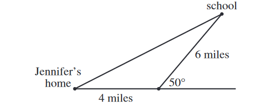

The figure below shows a map of Jennifer's neighborhood.

Which of the following expressions represents the straight-line distance, in miles, from Jennifer's home to school?
(Note: For a triangle with sides of length \(a\), \(b\), and \(c\) that are opposite angles \(\angle{A}\), \(\angle{B}\), and \(\angle{C}\), respectively, \(\displaystyle\frac{\sin{\angle{A}}}{a} = \frac{\sin{\angle{B}}}{b} = \frac{\sin{\angle{C}}}{c}\) and \(c^2 = a^2+b^2-2ab\cos{\angle{C}}\).)